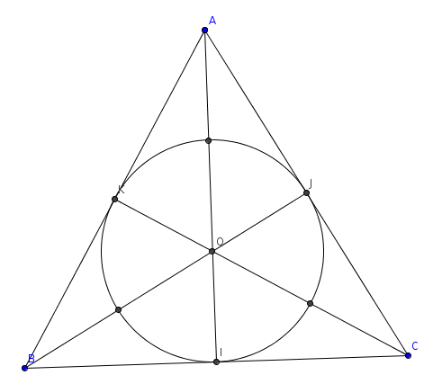

| Choisissez votre langue ! | Choose your language ! |
Soit ABC un triangle quelconque.
On désigne par I, J, K les milieux des côtés [BC], [AC] et [AB] respectivement.
O désigne le centre de gravité du triangle.
Montrer qu'il existe une ellipse centrée en O tangente aux troix côtés en I, J et K et passant par les milieux M,N,K des segments [AO], [BO] et [CO].
L'applet suivante vous permet de voir ce résultat.
Les points A, B et C peuvent être déplacés.
aide
Commencer par étudier le cas où le triangle est équilatéral.

solution
Le théorème est évidemment vrai quand le triangle est équilatéral, l'ellipse étant le cercle des neuf points (FeuerBach).
Soit maintenant DEF un triangle équilatéral.
Il existe une application affine et une seule transformant DEF en ABC.
Cette application conserve la convexité donc l'intérieur de DEF est transformé en l'intérieur de ABC.
Comme les formules de transformation des applications affines sont du premier degré, les applications affines transforment des courbes du second degré en des courbes du second degré, donc des coniques en coniques.
L'image du cercle inscrit dans le triangle DEF est donc une conique contenue dans l'intérieur du triangle ABC, donc bornée, c'est donc une ellipse (au sens large incluant les cercles).
Les applications affines conservant les milieux et les barycentres cette ellipse est centrée en l'image du centre de gravité de DEF, c'est à dire le centre de gravité de ABC.
Elle passe en outre par les milieux des côtés de ABC.
En outre si ABC n'est pas aplati l'application affine transformant DEF en ABC est bijective, ainsi comme le cercle inscrit dans DEF n'a qu'un point commun avec chacun des 3 côtés, il en est de même pour son image l'ellipse.
L'ellipse est donc tangente aux trois côtés du triangle en leur milieux.
Let ABC be any triangle.
We denote by I, J, K the midpoints of the sides [BC], [AC] and [AB] respectively.
O denotes the center of gravity of the triangle.
Show that there is an ellipse centered in O tangent to the three sides in I, J and K and passing through the midpoints M,N,K of the segments [AO], [BO] and [CO].
The following applet allows you to see this result.
Points A, B and C can be moved.
hint
Start by studying the case where the triangle is equilateral.
solution
The theorem is obviously true when the triangle is equilateral, the ellipse being the circle of nine points (FeuerBach).
Now let DEF be an equilateral triangle.
There is an affine map and a single one transforming DEF into ABC.
This map preserves convexity so the interior of DEF is transformed into the interior of ABC.
As the transformation formulas of the affine maps are of the first degree, the affine maps transform curves of the second degree into curves of the second degree, therefore from conics to conics.
The image of the circle inscribed in the triangle DEF is therefore a conic contained in the interior of the triangle ABC, therefore bounded, it is therefore an ellipse (in the broad sense including circles).
The affine maps preserving the midpoints and the barycenters this ellipse is centered in the image of the center of gravity of DEF, ie the center of gravity of ABC.
It also passes through the midpoints of the sides of ABC.
Moreover if ABC is not flattened the affine map transforming DEF into ABC is bijective, so as the circle inscribed in DEF has only one point in common with each of the 3 sides, it is the same for its image the ellipse.
The ellipse is therefore tangent to the three sides of the triangle at their midpoints.
|
Création Gilles Dubois - licence CC-BY-SA
Created by Gilles Dubois - licence CC-BY-SA
|
Septembre 2023
September 2023
|
Version mobile Jquery
Mobile Jquery version
|
|